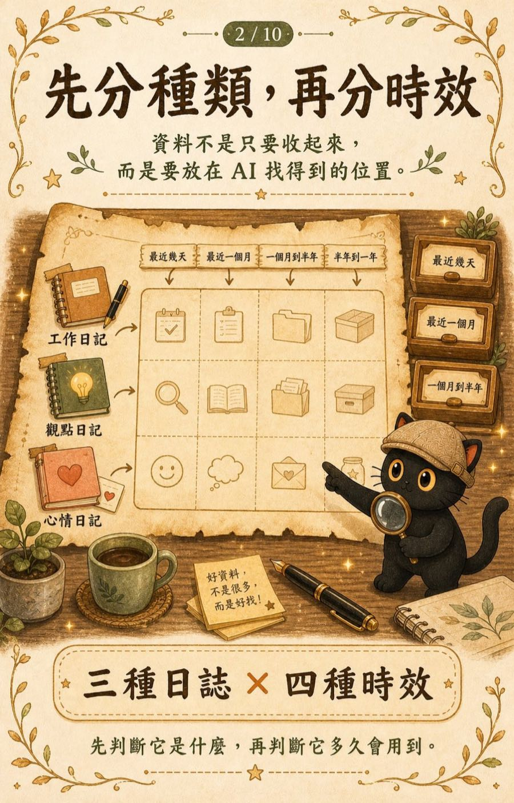
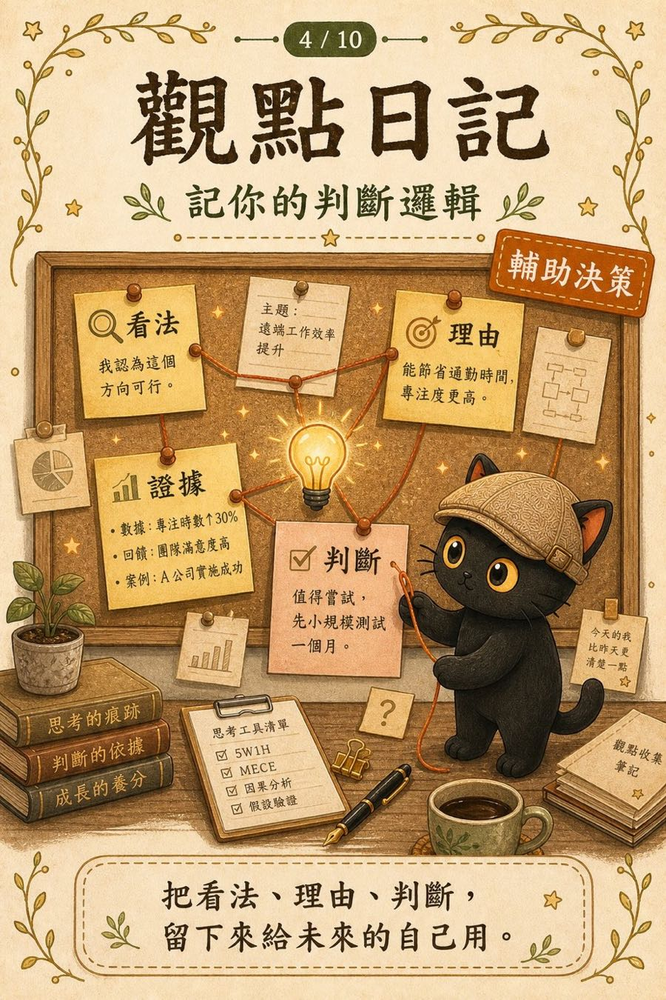
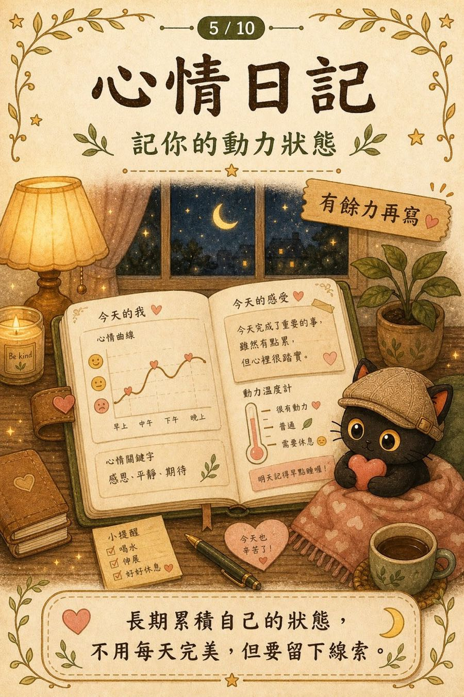
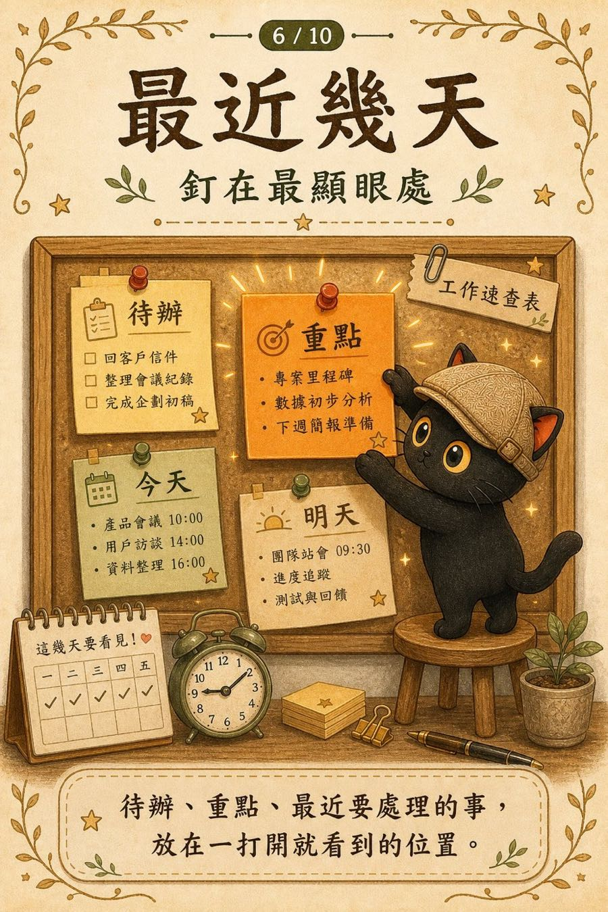
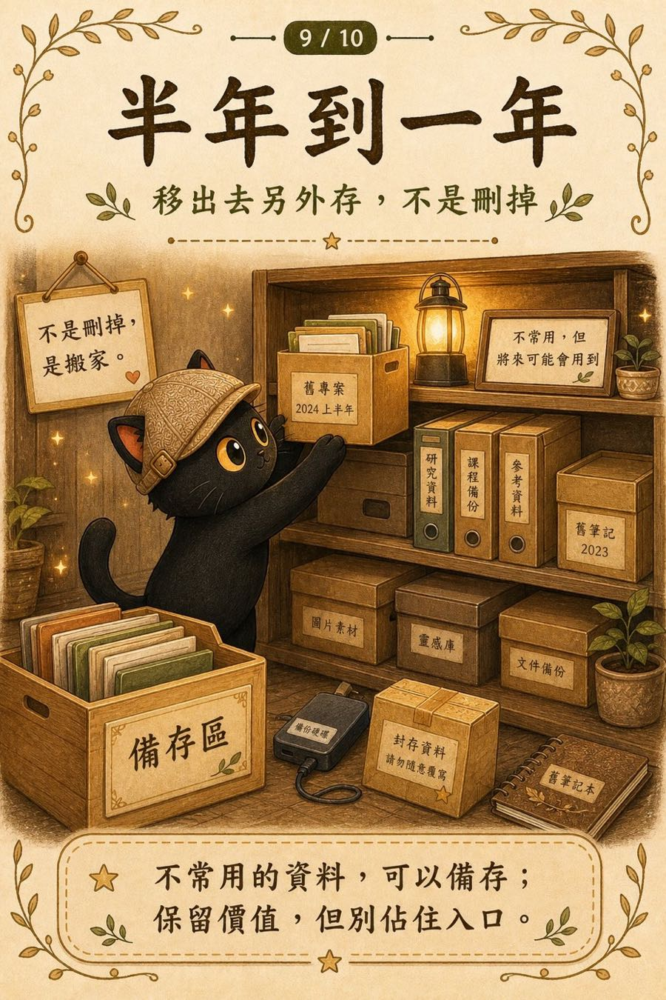
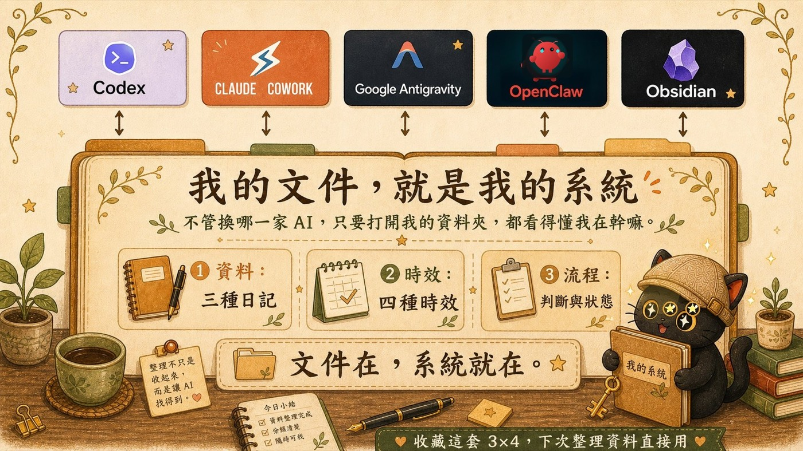
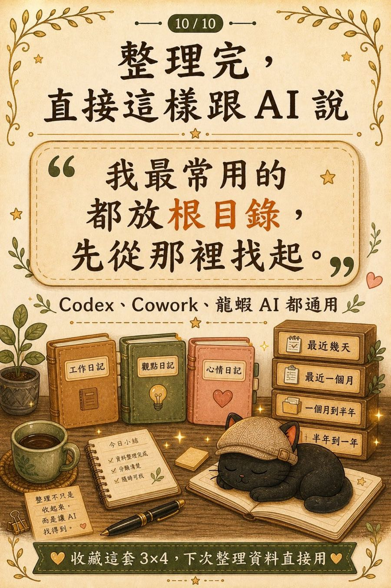

這篇在講什麼
很多人問我要不要學 Obsidian 做知識庫。我想講的其實是另一件事：工具會換，你寫下來的判斷不會。這篇把一套今天就能開始的方法講清楚，叫做 3X4 資料整理法，三種日記乘以四種時效，讓任何一家 AI 打開你的資料夾，都知道你在做什麼。
- Obsidian 只是顯示器，你寫下來的文件才是知識庫。
- 三種日記決定你寫什麼，四種時效決定放哪裡，讓 AI 找得到。
- 會寫日記、會分資料夾，你就已經在打造一個 AI 用得上的系統。
· 已經在用 AI，卻覺得它老是抓不到你的重點
· 一直想建知識庫，卻不知道從哪裡開始
· 一人公司、自由工作者、創業者，想讓 AI 真的幫上忙
· 一個理解：AI 抓不到重點，這件事其實怪不得 AI
· 一套方法：3X4 資料整理法，三種日記加四種時效
· 一條路：不用換工具、不用寫程式，就讓 AI 讀懂你
Obsidian 只是工具，你寫下的內容才是知識庫
很多人來問我同一個問題：要不要用 Obsidian 做知識庫？要不要花時間學？我的知識庫一直建不起來，是不是工具沒選對？
我每次都想說同一件事：別老想著用 Obsidian 做知識庫，因為 Obsidian 就不是知識庫。你認真整理的文件、認真寫的索引、認真思考過的標籤跟分類，這些才是你的知識庫。Obsidian 只是它的顯示器、修改介面、查詢工具而已。
換成 Notion、換成 Logseq、換成 Apple Notes，你寫下來的東西還在，知識庫就還在。工具會換，你寫下來的判斷不會。所以該花時間累積的，是判斷本身，不是工具的操作。
AI 不會通靈
這幾年 AI 進步得很快，我自己每天都在用 Claude、Codex、各種 Agent。但有件事想提醒你。
文科生怎麼搭建 Agent 用的知識庫
我自己有一套方法，叫做 3X4 資料整理法。三種類型乘以四種時效。
三種類型，決定你要寫什麼，也就是接下來要講的三種日記。四種時效，決定你寫好的東西放在哪裡，讓 AI 找得到。先講三種類型。這三種日記寫起來，就是你給 AI 的使用說明書。

工作日記：讓 AI 知道你在做什麼
工作日記記錄你現在做什麼、做到哪裡、遇到什麼問題、怎麼解決的。寫起來就像在交班：今天做了什麼、AI 要怎麼接手、把流程跟步驟寫下來。
為什麼這個最重要？因為 AI 讀了工作日記，隔天打開就能直接接手你的工作，不用每次從頭交代。我自己每天收工前花五到十分鐘，記錄當天做了什麼、明天打算怎麼做。隔天打開 Claude 或 Codex，它讀了昨天的工作日記，馬上就知道我在忙什麼，可以從昨天停下來的地方接著做。
別只記「做了什麼」
流水帳交完班就沒用了。我真正記的是思考脈絡，讓未來的我跟 AI 能重建「當時為什麼這樣決定、怎麼做到的」。所以除了做了什麼，我會多記一件事：為什麼這樣做、這件事的本質是什麼。事實過兩天就忘了，但為什麼才是回頭翻最值錢的東西。沒時間的話，至少寫「做了什麼加為什麼」。
跟 AI 一起做的事，拆成兩條軸
因為我很多事是跟 AI 一起做的，交班的時候我會分兩塊記：
我的判斷、我下了什麼決定、為什麼這樣指揮。
AI 做得好的，把哪個指令、哪個步驟讓它成功釘下來，因為這次成功很可能只是運氣好踩到對的方法。AI 做得不好的，記下卡在哪、為什麼錯、我怎麼修，下次直接避開這個坑。
這樣我的工作日記就同時是交班文件，也是跟 AI 協作的 SOP 沉澱庫。好的路徑越記越多、爛的坑越避越少，我跟 AI 的合作會一天比一天聰明。
觀點日記：讓 AI 懂你怎麼判斷
觀點日記記錄你對某件事的看法、判斷邏輯、為什麼這樣選擇。我的寫法很單純：我自己的判斷標準，為什麼這樣選，為什麼不那樣選。不用每天寫，遇到需要做選擇、有明確觀點的時候，花幾分鐘記下來就好。
這個的價值會慢慢累積出來。當你寫了一定數量，AI 就能從裡面找出規律，幫你把直覺變成可以複用的判斷框架。下次遇到類似選擇，AI 翻出你過去的觀點日記，提醒你上次是這樣想的，要不要參考。

有流程、有步驟、有判斷標準，AI 讀完就能照你的方式做事。在 AI Agent 的世界裡，skill 就是把一份專業知識封裝成 AI 可以執行的模組。你的工作日記寫久了會長出步驟跟流程，觀點日記寫久了會長出判斷標準，這兩個合在一起，你就有一個只屬於你的 skill。不用學程式，不用學框架，就是日復一日把你的事情寫清楚。
心情日記：管理專注力的秘訣
很多人聽到日記會以為心情日記最簡單，其實它最特別。我覺得情緒，是創業者很重要的隱性成本。如果你是一人公司、自由工作者、剛起步的創業者，你會發現你的時間沒有想像中那麼自由。做完一些事卻一直累，接到一些案子但動不下去，花一個下午在某件事上，結果晚上整個人空掉。時間花掉了，但事情沒做完，人也累了，這就是隱性成本。
寫心情日記，核心是要能評估自己的注意力如何分配、消耗在哪。做喜歡的事、沒有壓力的事，比較能保持專注。做被迫的事、跟長期目標違背的事，專注力消耗得比你想像中快。我習慣星期日花一點時間，回顧這週的力氣有沒有花對地方，下週要不要調整。這份回顧只有你自己看得到，但累積下來，AI 也能幫你看出規律：什麼類型的工作讓你進入心流，什麼情況容易讓你拖延。

四種時效：決定資料放在哪裡
寫好三種日記之後，還有一件事要顧：資料不是寫下來就好，放的位置，決定 AI 找不找得到。
我把資料按時效分成四層，越常用的放越近，越少用的放越遠。
這幾天的待辦跟重點，釘在最顯眼的地方。我用看板做這一層，AI 一打開第一眼就看到我現在在忙什麼。用置頂筆記也可以，重點是放在第一眼就看得到的地方。
打開知識庫就看到，AI 也從這裡找起。我的習慣是新建檔案預設都丟根目錄，不急著分類。根目錄是短期記憶區，最近在用、最近會翻的東西先留這裡。
頻率下降的檔案，收進相關的專案或主題資料夾，讓根目錄保持乾淨。要找的時候，指定資料夾或用關鍵字搜就好，AI 很擅長這種指定範圍的搜尋。
一份檔案半年沒打開過，它就不該待在你每天看到的地方。把它移出去另外存起來，留著以後要用，要找的時候搜尋點選就好。
這四層的邏輯，跟人腦的記憶很像。手邊放短期記憶，櫃子收長期記憶，很久沒用的封存起來。知識庫照這樣設計，AI 搜尋時先找近的、找不到再往遠的找，效率會高很多。


我的文件，就是我的系統
三種日記，加上四種時效，寫起來你會發現一件事：不管換哪一家 AI，只要讓它打開我的資料夾，都看得懂我在幹嘛。因為我的文件，就是我的系統。
我不是去學每一家 AI 怎麼設計，我是把我的資料、判斷、狀態整理好，讓 AI 來學我。Obsidian 不在了，我的系統還在。Claude 換掉了，我的系統還在。哪家 AI 好用、當前任務需要怎樣的流程，我就用哪套工具。

具體的開始方式
如果你看完想開始，我建議從工作日記開始。每次任務結束後，直接叫 AI 幫你把今天的工作流程寫一篇工作日記就好。流程跟進度，AI 自己就能記錄清楚。但有兩件事它做不到，要你補上去。
AI 寫完，你掃一遍，看流程對不對、關鍵步驟有沒有漏。把做得特別好、跟特別卡的地方自己加上去。特別順利的也要記，因為這次順不代表下次也順，把為什麼順記清楚，下次就能照著做一遍。
寫清楚現在是什麼環境、什麼情況、我的目標是什麼，所以我才下這個判斷。以後情況變了，AI 拿這些判斷當參考，比較知道怎麼變通，不會死板照舊。AI 不會通靈，你把情況跟目標說出來，它才接得住。
你只要會寫文件、會分類資料夾、會下一些標籤跟關鍵字，讓 AI 知道每一篇是幹什麼用的，你其實就已經在打造一個 AI 用得上的系統了。這件事聽起來很專業，說穿了就是現在很多人在講的駕馭工程的一部分，你也可以把它看成一種上下文管理。

延伸說明：駕馭工程與上下文管理
什麼是駕馭工程
駕馭工程是 OpenAI 在 2026 年提出的講法。他們說，一個 AI Agent，等於 AI 模型加上駕馭工程。AI 模型是大腦，駕馭工程是你控制這個大腦的方法。對不寫程式的人來說，駕馭工程沒那麼玄，說穿了就是三件事：把資料夾結構設計好、講清楚每個資料夾是幹什麼用的、讓 AI 能照這個路徑去跑。
什麼是上下文管理
上下文，就是你給 AI 的背景資訊。AI 要做好一件事，得先知道前因後果。上下文管理，就是讓 AI 在對的時候，讀到對的資料。哪些釘在最顯眼的地方、哪些收進資料夾、哪些下了標籤方便它找到，這些安排都是上下文管理。3X4 資料整理法做的，正是這件事。
我是江江教練
隱性知識提煉師加 AI 應用規劃師。我分享怎麼把思維框架轉成提示詞，讓 AI 的輸出更精準，也鍛鍊我們自己的思考；以及怎麼把零散的知識經驗，整理成清楚的架構，讓 AI 幫我們在不同場景靈活運用。
我每月固定舉辦兩場免費線上講座，分享實戰經驗與方法論。對 AI 加知識管理、隱性知識提煉、一人公司有興趣，歡迎加入我的 LINE 社群。
免費加入 LINE 社群 ↗